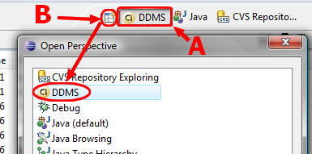
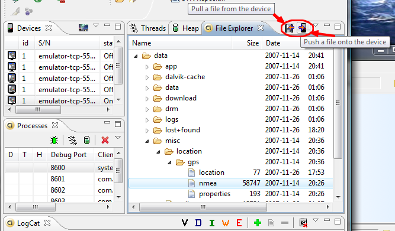
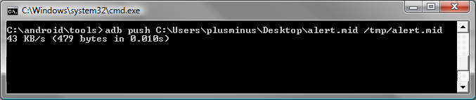

如何应用DDMS协助开发Android Apps
简单介绍如何应用DDMS协助开发Android Apps
DDMS 的全称是Dalvik Debug Monitor Service，它为我们提供例如：为测试设备截屏，针对特定的进程查看正在运行的线程以及堆信息、Logcat、广播状态信息、模拟电话呼叫、接收SMS、虚拟地理坐标等等。
DDMS 工具存放在SDK -tools/路径下，可以直接双击ddms.bat运行，也可以通过terminal/console(CLS)输入ddms(在Mac或者Linux系统中输入./ddms）启动程序。DDMS对Emulator和外接测试机有同等效用。如果系统检测到它们(VM)同时运行，那么DDMS将会默认指向Emulator。
下边通过GUI简单了解DDMS的一些功能：
Devices
在GUI的左上角可以看到标签为”Devices”的面板，这里可以查看到所有与DDMS连接的终端的详细信息，以及每个终端正在运行的APP进程，每个进程最右边相对应的是与调试器链接的端口。因为Android是基于Linux内核开发的操作平台，同时也保留了Linux中特有的进程ID，它介于进程名和端口号之间。
在面板的右上角有一排很重要的按键他们分别是Debug the selected process、Update Threads、Update Heap、Stop Process和ScreenShot。
Debug Selected Process:
用于表现被选择进程与调试器连接状态，如果进程前带有绿色表示，那么说明该进程的工程文件在当前Workspace中处于打开状态，并允许我们开启调试器监听进程运行情况。
Update Threads:
用于查看当前进程所包含的线程。当选中任意进程后，点击这个命令可以在右侧面板的Threads标签里看到详细的线程运行情况，同时在被选中的进程名称后边会出现显示线程信息标识。
Update Heap: 与上一个Update Threads类似，只不过这个命令用于查看当前进程堆栈内存的使用情况。
Stop Process: 这个应该非常容易理解，终止当前进程。
ScreenShot: 截取当前测试终端桌面。
Emulator Control
通过这个面板的一些功能可以非常容易的使测试终端模拟真实手机所具备的一些交互功能，比如：接听电话，根据选项模拟各种不同网络情况，模拟接受SMS消息和发送虚拟地址坐标用于测试GPS功能等。
Telephony Status: 通过选项模拟语音质量以及信号连接模式。
Telephony Actions: 模拟电话接听和发送SMS到测试终端。
Location Control: 模拟地理坐标或者模拟动态的路线坐标变化并显示预设的地理标识。
Manually send individual longitude/latitude coordinates to the device ： 手动为终端发送二维经纬坐标。
Use a GPX file describing a route for playback to the device ： 通过GPX文件导入序列动态变化地理坐标，从而模拟行进中GPS变化的数值。
Use a KML file describing individual placemarks for sequenced playback to the device ： 通过KML文件导入独特的地理标识，并以动态形式根据变化的地理坐标显示在测试终端。
Logcat
现实所有针对测试终端操作的日志记录，可以很明显的区分开警告信息和错误信息。
利用DDMS从模拟器上导入\导出文件学习内容: 你将学会如何使用Eclipse的DDMS-View 从模拟器上导入导出文件。描述:
依照下图打开 DDMS-View . (如果你上面没有按钮A, 那么请按照 B所示方式打开)。

打开文件浏览器，使用右上角的导入导出按钮来操作目标文件..

另外一种导入方法:
运行模拟器，在命令行模式下到 ".../android_sdk/tools"目录下，使用下面的命令

adb push <local_source> <emulator_destination>
Android截图方法之DDMS篇提起Android截图，这里虽然Google在Android操作系统中提供了帧缓存的权限许可，但是没有Root权限仍然无法很好的截图，现在安装好Android SDK和Eclipse，在DDMS中可以看到连接Devices标签中找到可用的唯一个图标。
最终在Device Screen Capture窗口中就是Android屏幕截图效果，直接单击Save按钮即可保存图片为PNG格式。
不使用DDMS打电话
通过gsm call命令可以像Android模拟器打电话，除了在EclipseADT的DDMS中通过按钮Dial外，还可以通过DDMS外壳调用gsm call命令直接拨打，我们首先需要启动AndroidEmulator，然后在cmd环境下执行telnet localhost 5554 下面就可以向Android模拟器拨号，参数为gsmcall < phoneNum> ，比如给10086打电话为gsm call +10086